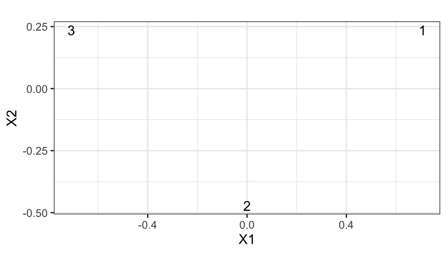
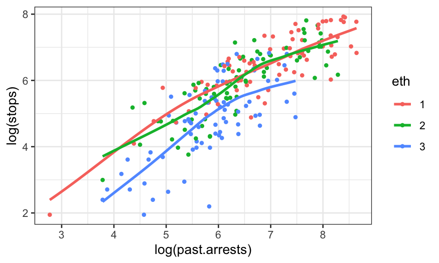
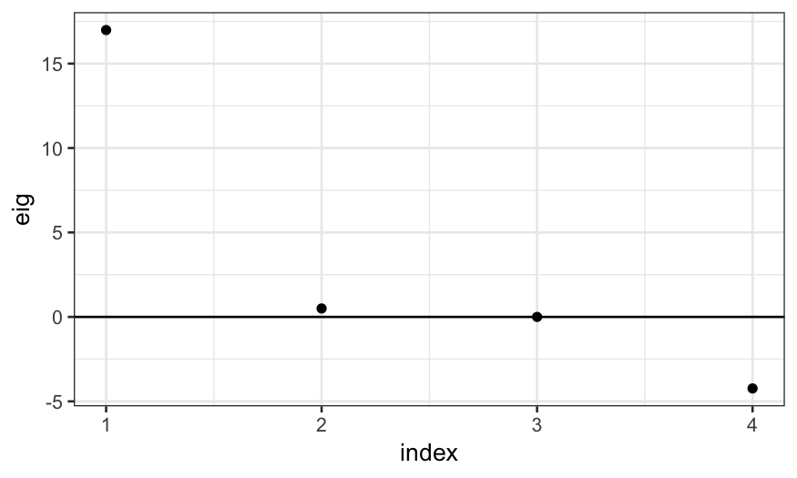
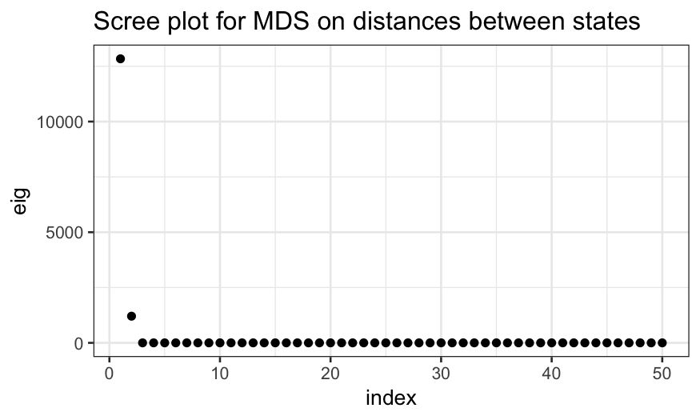
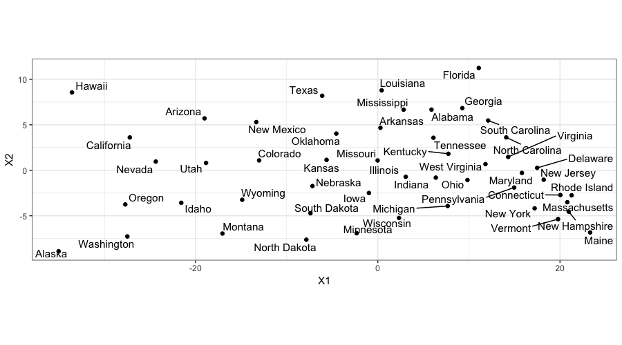
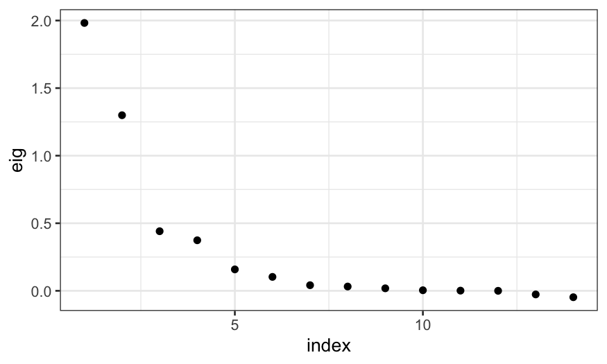
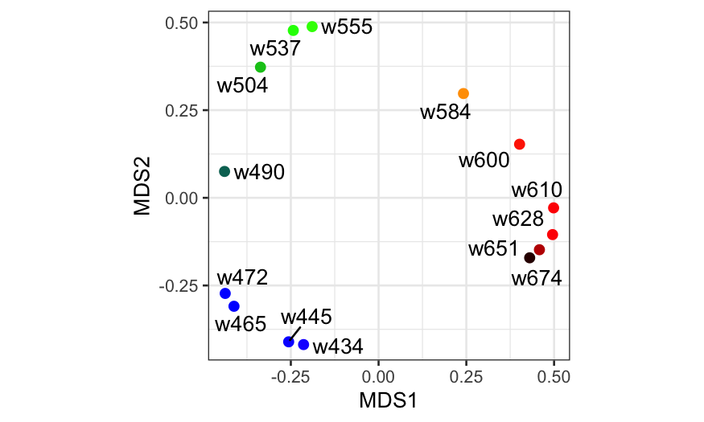
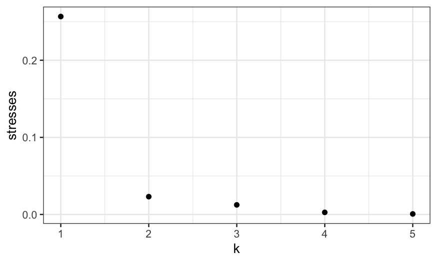

Julia Fukuyama
Instead of measurements on variables, like in PCA, we have distances between the samples.
The distances can be what was measured initially, or the distance could be constructed by the analyst from other variables that were measured directly.
In multi-dimensional scaling, the goal is to make a map of the samples in a low-dimensional space (probably 2-dimensional space) so that the distances in that map match the distances between the samples as closely as possible.
Subjective ratings of dissimilarities between objects
Distances between politicians based on voting records
Travel times between cities
## [,1] [,2] [,3]
## [1,] 0.00 1 1.41
## [2,] 1.00 0 1.00
## [3,] 1.41 1 0.00Here D is a distance matrix, and the \((i,j)\) element of D tells us
the distance between sample \(i\) and
sample \(j\).
How would you position these samples in space so that the distances
between them matched the distances in D?
In multi-dimensional scaling, we want to find an embedding of the samples into Euclidean space so that the distances between the embedded points match the distances between the samples as closely as possible.
This sounds fancy, but all it means is that we create a set of coordinates and assign each sample a value along each coordinate so that the distances between the samples match the input distances.
How does this work on our fake data?
## [,1] [,2]
## [1,] 7.071068e-01 0.2357023
## [2,] -1.110223e-16 -0.4714045
## [3,] -7.071068e-01 0.2357023mds_points = cmdscale(D)
ggplot(data.frame(mds_points)) +
geom_text(aes(x = X1, y = X2, label = 1:3)) + coord_fixed()
We can check that the distances match:
## The dist function computes distances (Euclidean
## by default) between the rows of a data frame
dist(mds_points)## 1 2
## 2 1.000000
## 3 1.414214 1.000000## [,1] [,2] [,3]
## [1,] 0.000000 1 1.414214
## [2,] 1.000000 0 1.000000
## [3,] 1.414214 1 0.000000One solution to the multi-dimensional scaling problem is given by classical multi-dimensional scaling.
Let \(\mathbf D \in \mathbb R^{n \times n}\) be a matrix where \(\mathbf D_{ij}\) contains the square of the distance between sample \(i\) and sample \(j\).
Let \(\mathbf H \in \mathbb R^{n \times n}\) be the centering matrix, \(\mathbf H = \mathbf I - \frac{1}{n} \mathbf 1 \mathbf 1^T\).
Create the doubly-centered distance matrix \(\mathbf B = -\frac{1}{2} \mathbf H \mathbf D \mathbf H\), and let \(\mathbf U \mathbf \Lambda \mathbf U^T\) be the singular value decomposition of \(\mathbf B\).
Then the \(k\)-dimensional solution to the multi-dimensional scaling problem is obtained by taking \(\mathbf U_{(k)} \mathbf \Lambda_{(k)}^{1/2}\).
Idea behind this solution:
Suppose the distance really did come from a matrix \(\mathbf X \in \mathbb R^{n \times k}\), where we computed the Euclidean distances between the rows of \(\mathbf X\). For definiteness, assume that the columns of \(\mathbf X\) are centered.
Then it turns out (linear algebra exercise: verify this) that \((\mathbf H \mathbf X) (\mathbf H \mathbf X)^T = \mathbf B\).
The top \(k\) left singular vectors of \(\mathbf X\) (which is the same as \(\mathbf H \mathbf X\) because \(\mathbf X\) already has centered columns) will therefore give the optimal representation of the true embedded points that we got the distances from.
The singular vectors of \(\mathbf H \mathbf X\) are the same as the singular vectors of \(\mathbf B\), so if we start off with \(\mathbf B\) instead of \(\mathbf X\), we can still get the optimal low-dimensional embedding by taking the top singular vectors of \(\mathbf B\).
Just as in PCA and with the SVD, we have a measure of the quality of the approximation.
In classical multi-dimensional scaling, these are given by the eigenvalues of \(\mathbf B\), and plotting the eigenvalues tells us how how much of the “variance” is explained by the multi-dimensional scaling axes.
If we can represent the distances perfectly with an embedding into \(k\)-dimensional space, the top \(k\) eigenvalues will be non-zero and the remainder will be zero.
We can check this on our fake data, where we constructed the distances so that they could be exactly represented in two-dimensional space.
## [1] 1.000000e+00 3.333333e-01 2.220446e-16In general, you won’t be able to get an exact representation in a number of dimensions that’s easy to visualize, but you will want to know how well you’re doing with the number of dimensions you take.
We use the eigenvalues to make a scree plot, analogous to the PCA scree plot, to measure the quality of the embedding
Major difference between MDS and PCA:.
The eigenvalues can be negative.
Negative eigenvalues mean that there is no embedding of the points so that the Euclidean distances between them exactly match the input distances, and the size of the negative eigenvalues indicate how severe the problem is.
Not that important, but the terminology is that if you see negative eigenvalues, it means that your distances are non-Euclidean.
## [,1] [,2] [,3] [,4]
## [1,] 0.0 1 1 0.1
## [2,] 1.0 0 1 5.0
## [3,] 1.0 1 0 5.0
## [4,] 0.1 5 5 0.0## 1 2 3
## 2 2.436166
## 3 2.436166 1.000000
## 4 2.605269 5.014562 5.014562
As promised, this shows up in negative eigenvalues:
## eig index
## 1 16.987227 1
## 2 0.500000 2
## 3 0.000000 3
## 4 -4.234727 4
R contains data on state locations, including one called
state.center that gives the latitude and longitude
between
What happens if we compute distances between the centers of the states and run multi-dimensional scaling on those distances?
Before we get to the MDS plot, let’s look at the scree plot to see the quality of the MDS solution.
ggplot(data.frame(eig = state_mds$eig, index = 1:50)) +
geom_point(aes(x = index, y = eig)) +
ggtitle("Scree plot for MDS on distances between states")
Why do we only get non-zero eigenvalues for the first two MDS axes?
ggplot(data.frame(state_mds$points), aes(x = X1, y = X2, label = state.name)) +
geom_text_repel() + geom_point() + coord_fixed()
When we plot the MDS solution, we get a map!
The states all have the correct relative locations, but the north-south axis is going the wrong way.
This is just due to an indeterminacy in the solution: the singular value decomposition is only determined up to a sign change for the singular vectors.
More heuristically, since we only provide MDS with distances, we can only expect it to give us good approximations to the distances between the samples, we can’t expect it to know about north and south.
Non-metric MDS is a robust alternative to classical MDS, and it is used when we want a map that preserves relative distances instead of absolute distances.
The idea is that we want to find a an embedding of the points into a lower-dimensional space so that the ranks of the distances are preserved as well as possible (the points that are the farthest from each other in the embedded space have the largest input distance, the points that are closest to each other in the embedded space have the smallest input distance, etc.).
To do this, we find an embedding of the points into a lower-dimensional space and a monotonic transformation of the embedded distances so that the transformed distances recapitulate the input distances as well as possible. The monotone transformation is essentially a trick that allows us to match ranks of distances instead of absolute distances.
Notes:
NMDS is more resistant to outliers than classical MDS: if one point has a very large distance from all the others, the first classical MDS axis will tend to separate that point from the others and not be informative about the remaining distances.
Unlike classical MDS, NMDS does not give nested solutions: if we do NMDS with 2 axes, the first axis will not be equal to the NMDS solution with 1 axis.
There is no notion of percentage of variation explained by individual axes as in classical MDS.
Let \(d_i\) contain the input distances, and let \(f\) be a monotone increasing function.
Note that since \(f\) is monotone, \(d_i < d_j\) implies that \(f(d_i) < f(d_j)\), and so the relative distances between the points are preserved under \(f\).
In NMDS, we want to minimize the stress function, defined as \[ \text{STRESS}^2 = \frac{\sum_i (f(\tilde d_i) - d_i)^2}{\sum_j d_j^2} \] where \(d\) represents the input distances, and \(\tilde d\) represent the distances between the embedded points.
The NMDS algorithm is as follows:
Find a random embedding of the samples, e. g. by sampling from a normal distribution.
Calculate the distances \(\tilde d\) between the embedded sample points.
Find the optimal monotonic transformation of the distances \(f\) so that \(f(\tilde d)\) matches \(d\) as closely as possible.
Find the embedding of the samples such that the distances between the embedded points matches \(f(d)\) as closely as possible.
Compare the stress to some criterion. If the change in stress is small enough then exit the algorithm, otherwise return to to step 2.
In a psychology study (Ekman, Gosta. 1954. “Dimensions of Color Vision.” The Journal of Psychology 38 (2). Taylor & Francis: 467–74.), the investigator asked subjects to rate similarities between colors.
These were combined to give overall measure of similarities between
colors, and the results are in ekman.txt.
ekm = read.table("../../datasets/ekman.txt", header=TRUE)
rownames(ekm) = colnames(ekm)
## the elements in ekm are similarities, but we
## need dissimilarities instead. We can create
## dissimilarities by taking the complement of
## the similarities and setting the diagonal to zero.
ekm_dist = 1 - ekm - diag(1, ncol(ekm))
ekm_dist[1:5, 1:5]## w434 w445 w465 w472 w490
## w434 0.00 0.14 0.58 0.58 0.82
## w445 0.14 0.00 0.50 0.56 0.78
## w465 0.58 0.50 0.00 0.19 0.53
## w472 0.58 0.56 0.19 0.00 0.46
## w490 0.82 0.78 0.53 0.46 0.00Let’s try classical MDS first:
ekm_mds = cmdscale(ekm_dist, eig = TRUE)
## we can make a scree plot giving
## the fraction of variance explained
ggplot(data.frame(eig = ekm_mds$eig,
index = 1:length(ekm_mds$eig))) +
geom_point(aes(x = index, y = eig))
Note that the negative eigenvalues at the end indicate that the dissimilarities cannot be exactly represented in Euclidean space, but the values are not that large and so we aren’t too concerned.
The top two eigenvalues are quite large, indicating that a two-dimensional MDS solution does a reasonable job at recapitulating the dissimilarities between the samples.
And finally the plot:
## Here we're changing variable names and
## adding some additional information to
## the data frame we will use to plot the
## MDS solution
ekm_points = ekm_mds$points[,1:2] %>%
as_tibble %>%
setNames(paste0("MDS", 1:2)) %>%
mutate(
name = rownames(ekm),
rgb = photobiology::w_length2rgb(as.numeric(sub("w", "", name))))
ggplot(ekm_points, aes(x = MDS1, y = MDS2)) +
geom_point(col = ekm_points$rgb, size = 2) +
geom_text_repel(aes(label = name)) + coord_fixed()
Remember that NMDS is a randomized algorithm, so each run can in principle give a different solution.
The metaMDS function (in the package vegan)
repeats the NMDS algorithm many times (20 by default) and looks for the
best solution among the results.
The output here tells us that for each run of the algorithm, the stresses are about the same, suggesting that the corresponding solutions are the same.
The part of the output that says Procrustes: rmse
1.060348e-06 max resid 1.960065e-06 is checking for similarity
between the solutions directly: rmse and max
resid describe the discrepancies between the solution and the
previous best solution.
Here we see that the algorithm converges ot the same solution every time.
## Run 0 stress 0.02310251
## Run 1 stress 0.02310251
## ... Procrustes: rmse 2.102867e-06 max resid 3.320966e-06
## ... Similar to previous best
## Run 2 stress 0.02310251
## ... Procrustes: rmse 7.088863e-06 max resid 1.145484e-05
## ... Similar to previous best
## Run 3 stress 0.02310251
## ... Procrustes: rmse 6.438299e-06 max resid 1.040306e-05
## ... Similar to previous best
## Run 4 stress 0.02310251
## ... New best solution
## ... Procrustes: rmse 4.681247e-06 max resid 7.620905e-06
## ... Similar to previous best
## Run 5 stress 0.02310251
## ... New best solution
## ... Procrustes: rmse 3.633134e-06 max resid 6.162556e-06
## ... Similar to previous best
## Run 6 stress 0.02310251
## ... Procrustes: rmse 3.021893e-06 max resid 5.156862e-06
## ... Similar to previous best
## Run 7 stress 0.02310251
## ... New best solution
## ... Procrustes: rmse 1.146055e-06 max resid 2.470557e-06
## ... Similar to previous best
## Run 8 stress 0.02310251
## ... New best solution
## ... Procrustes: rmse 9.659437e-07 max resid 2.036998e-06
## ... Similar to previous best
## Run 9 stress 0.02310251
## ... Procrustes: rmse 4.787886e-06 max resid 8.130221e-06
## ... Similar to previous best
## Run 10 stress 0.02310251
## ... Procrustes: rmse 5.616317e-07 max resid 8.747772e-07
## ... Similar to previous best
## Run 11 stress 0.02310251
## ... Procrustes: rmse 5.527651e-07 max resid 1.104713e-06
## ... Similar to previous best
## Run 12 stress 0.02310251
## ... Procrustes: rmse 2.855771e-06 max resid 4.601952e-06
## ... Similar to previous best
## Run 13 stress 0.02310251
## ... Procrustes: rmse 1.506129e-06 max resid 2.440185e-06
## ... Similar to previous best
## Run 14 stress 0.02310251
## ... Procrustes: rmse 6.926222e-06 max resid 1.15127e-05
## ... Similar to previous best
## Run 15 stress 0.02310251
## ... Procrustes: rmse 8.158106e-07 max resid 1.29539e-06
## ... Similar to previous best
## Run 16 stress 0.02310251
## ... Procrustes: rmse 1.780811e-06 max resid 2.655272e-06
## ... Similar to previous best
## Run 17 stress 0.02310251
## ... Procrustes: rmse 6.859623e-07 max resid 1.288504e-06
## ... Similar to previous best
## Run 18 stress 0.02310251
## ... Procrustes: rmse 5.879151e-07 max resid 8.94391e-07
## ... Similar to previous best
## Run 19 stress 0.02310251
## ... Procrustes: rmse 4.007526e-06 max resid 6.695112e-06
## ... Similar to previous best
## Run 20 stress 0.02310251
## ... Procrustes: rmse 3.797161e-06 max resid 5.754955e-06
## ... Similar to previous best
## *** Solution reachedWe would like an analog of the scree plot so that we can evaluate how many dimensions to use.
One way to do this is to compute the stress function for each number of dimensions and plot that.
## since the algorithm is random, it would be
## better to do this many times for each value
## of k and take the average
stresses = sapply(1:5, function(k) metaMDS(ekm_dist, k = k, autotransform = FALSE)$stress)## Run 0 stress 0.2721258
## Run 1 stress 0.5212407
## Run 2 stress 0.4856468
## Run 3 stress 0.490962
## Run 4 stress 0.2567348
## ... New best solution
## ... Procrustes: rmse 0.05564529 max resid 0.1384309
## Run 5 stress 0.2687508
## Run 6 stress 0.4533083
## Run 7 stress 0.4373748
## Run 8 stress 0.4843117
## Run 9 stress 0.5071186
## Run 10 stress 0.5291604
## Run 11 stress 0.4866729
## Run 12 stress 0.4983676
## Run 13 stress 0.4942408
## Run 14 stress 0.4915839
## Run 15 stress 0.4584145
## Run 16 stress 0.5006447
## Run 17 stress 0.5165007
## Run 18 stress 0.5246208
## Run 19 stress 0.5003296
## Run 20 stress 0.5081357
## *** No convergence -- monoMDS stopping criteria:
## 20: scale factor of the gradient < sfgrmin
## Run 0 stress 0.02310251
## Run 1 stress 0.02310251
## ... Procrustes: rmse 1.603649e-06 max resid 2.608348e-06
## ... Similar to previous best
## Run 2 stress 0.02310251
## ... New best solution
## ... Procrustes: rmse 1.283596e-06 max resid 2.203181e-06
## ... Similar to previous best
## Run 3 stress 0.02310251
## ... Procrustes: rmse 9.753636e-07 max resid 1.832654e-06
## ... Similar to previous best
## Run 4 stress 0.2925016
## Run 5 stress 0.02310251
## ... Procrustes: rmse 5.337933e-06 max resid 8.633325e-06
## ... Similar to previous best
## Run 6 stress 0.02310251
## ... Procrustes: rmse 1.579965e-06 max resid 3.45673e-06
## ... Similar to previous best
## Run 7 stress 0.02310251
## ... Procrustes: rmse 3.284343e-06 max resid 5.161338e-06
## ... Similar to previous best
## Run 8 stress 0.02310251
## ... Procrustes: rmse 2.555243e-06 max resid 4.933159e-06
## ... Similar to previous best
## Run 9 stress 0.02310251
## ... New best solution
## ... Procrustes: rmse 1.01295e-06 max resid 2.103083e-06
## ... Similar to previous best
## Run 10 stress 0.02310251
## ... Procrustes: rmse 2.232036e-06 max resid 4.119736e-06
## ... Similar to previous best
## Run 11 stress 0.02310251
## ... Procrustes: rmse 1.663214e-06 max resid 3.072049e-06
## ... Similar to previous best
## Run 12 stress 0.02310251
## ... Procrustes: rmse 2.237823e-06 max resid 4.174616e-06
## ... Similar to previous best
## Run 13 stress 0.02310251
## ... New best solution
## ... Procrustes: rmse 1.327781e-06 max resid 2.668128e-06
## ... Similar to previous best
## Run 14 stress 0.02310251
## ... Procrustes: rmse 3.930095e-06 max resid 6.673939e-06
## ... Similar to previous best
## Run 15 stress 0.02310251
## ... Procrustes: rmse 1.227083e-06 max resid 2.181569e-06
## ... Similar to previous best
## Run 16 stress 0.02310251
## ... Procrustes: rmse 1.61893e-06 max resid 2.611836e-06
## ... Similar to previous best
## Run 17 stress 0.02310251
## ... Procrustes: rmse 4.812507e-06 max resid 7.680302e-06
## ... Similar to previous best
## Run 18 stress 0.02310251
## ... New best solution
## ... Procrustes: rmse 9.04642e-07 max resid 1.366657e-06
## ... Similar to previous best
## Run 19 stress 0.02310251
## ... Procrustes: rmse 2.685811e-06 max resid 5.192665e-06
## ... Similar to previous best
## Run 20 stress 0.02310251
## ... Procrustes: rmse 4.933418e-06 max resid 7.938065e-06
## ... Similar to previous best
## *** Solution reached
## Run 0 stress 0.01253494
## Run 1 stress 0.01703834
## Run 2 stress 0.1085453
## Run 3 stress 0.01715047
## Run 4 stress 0.01483193
## Run 5 stress 0.0156638
## Run 6 stress 0.01253473
## ... New best solution
## ... Procrustes: rmse 0.000744619 max resid 0.00139024
## ... Similar to previous best
## Run 7 stress 0.01253767
## ... Procrustes: rmse 0.0008841715 max resid 0.001456
## ... Similar to previous best
## Run 8 stress 0.01678396
## Run 9 stress 0.0171508
## Run 10 stress 0.01529306
## Run 11 stress 0.01529293
## Run 12 stress 0.01253648
## ... Procrustes: rmse 0.001276111 max resid 0.002392105
## ... Similar to previous best
## Run 13 stress 0.01619717
## Run 14 stress 0.01514985
## Run 15 stress 0.01617106
## Run 16 stress 0.012539
## ... Procrustes: rmse 0.001555727 max resid 0.00261888
## ... Similar to previous best
## Run 17 stress 0.0160428
## Run 18 stress 0.01777524
## Run 19 stress 0.0140412
## Run 20 stress 0.0124441
## ... New best solution
## ... Procrustes: rmse 0.01877198 max resid 0.04687448
## *** No convergence -- monoMDS stopping criteria:
## 11: no. of iterations >= maxit
## 9: stress ratio > sratmax
## Run 0 stress 0.006273768
## Run 1 stress 0.004990382
## ... New best solution
## ... Procrustes: rmse 0.1007591 max resid 0.1849666
## Run 2 stress 0.00487154
## ... New best solution
## ... Procrustes: rmse 0.01068611 max resid 0.02011363
## Run 3 stress 0.006313356
## Run 4 stress 0.005815049
## Run 5 stress 0.005724101
## Run 6 stress 0.01109444
## Run 7 stress 0.003030431
## ... New best solution
## ... Procrustes: rmse 0.04301309 max resid 0.07967849
## Run 8 stress 0.003766835
## Run 9 stress 0.002812255
## ... New best solution
## ... Procrustes: rmse 0.007655836 max resid 0.01192655
## Run 10 stress 0.002872299
## ... Procrustes: rmse 0.01055606 max resid 0.01956895
## Run 11 stress 0.006120003
## Run 12 stress 0.1316872
## Run 13 stress 0.003452073
## Run 14 stress 0.005912479
## Run 15 stress 0.006849582
## Run 16 stress 0.003751898
## Run 17 stress 0.006483368
## Run 18 stress 0.003709185
## Run 19 stress 0.004488317
## Run 20 stress 0.002733593
## ... New best solution
## ... Procrustes: rmse 0.008442853 max resid 0.01632713
## *** No convergence -- monoMDS stopping criteria:
## 19: no. of iterations >= maxit
## 1: stress ratio > sratmax
## Run 0 stress 0.0009367835
## Run 1 stress 0.002131138
## Run 2 stress 0.003907969
## Run 3 stress 0.001706481
## Run 4 stress 0.005466837
## Run 5 stress 0.002919591
## Run 6 stress 0.00258284
## Run 7 stress 0.003337378
## Run 8 stress 0.005895784
## Run 9 stress 0.001076621
## ... Procrustes: rmse 0.09829673 max resid 0.2129623
## Run 10 stress 0.002311725
## Run 11 stress 0.002533747
## Run 12 stress 0.001741355
## Run 13 stress 0.002134076
## Run 14 stress 0.001557201
## Run 15 stress 0.0006962816
## ... New best solution
## ... Procrustes: rmse 0.08041192 max resid 0.1217456
## Run 16 stress 0.001892428
## Run 17 stress 0.002917626
## Run 18 stress 0.001702046
## Run 19 stress 0.002460906
## Run 20 stress 0.002818138
## *** No convergence -- monoMDS stopping criteria:
## 20: no. of iterations >= maxit## note about above, autotransform is a parameter
## that is specific to ecology data, we want to
## set it to FALSE
ggplot(data.frame(stresses, k = 1:5)) + geom_point(aes(x = k, y = stresses))
Here we see that the stress drops substantially going from 1 to 2 dimensions, and then doesn’t go down that much once we increase the number of dimensions further.
This indicates to us that the two-dimensional solution is likely to be pretty good, just as it was with classical MDS.